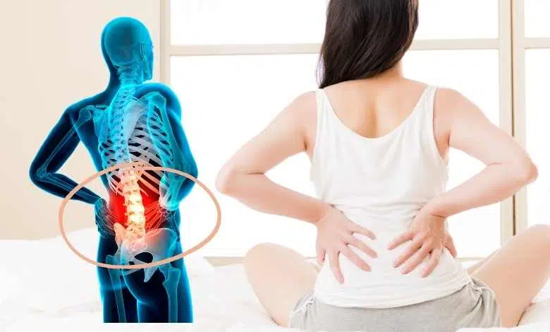
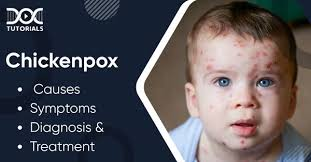
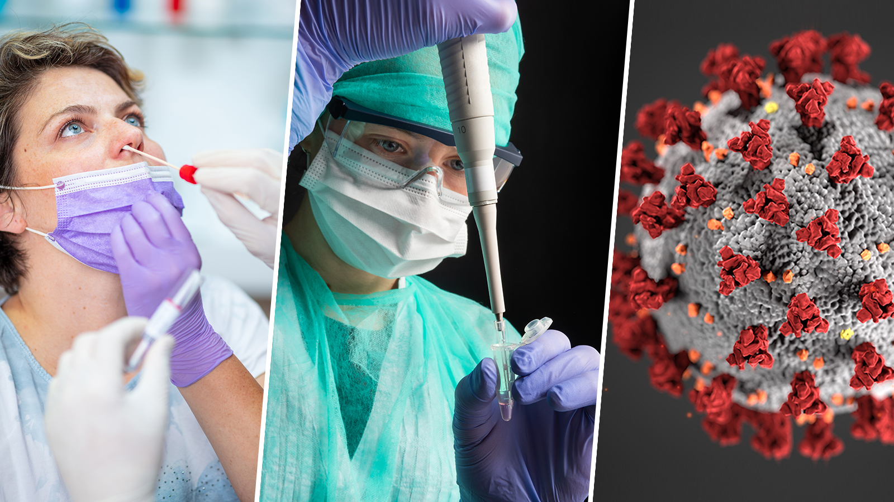
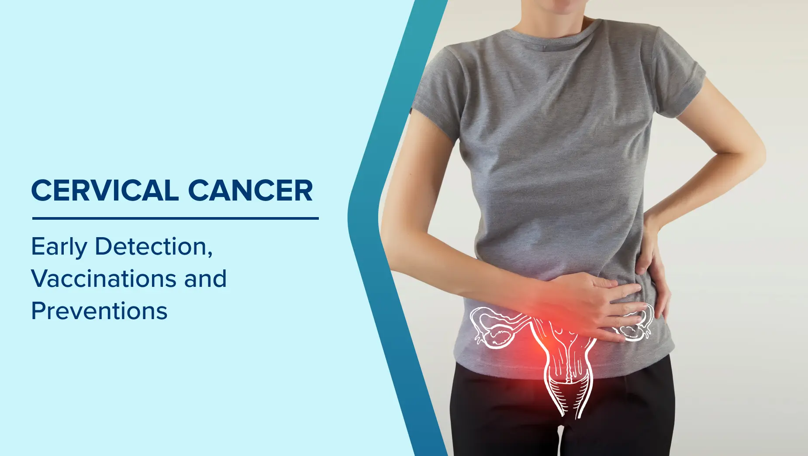
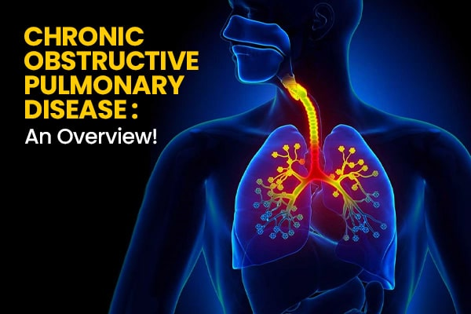

Back Pain
- About: Pain in the lower, middle, or upper back, often from poor posture or lifting.
- Symptoms: Aching, stiffness, sharp or dull pain in the back.
- Do's: Maintain good posture, stretch regularly, apply warm compress.
- Don'ts: Avoid sitting too long or lifting heavy items improperly.
- Precautions: Use ergonomic chairs, exercise core muscles.
- Concern: Pain lasting more than a week or causing leg numbness.

Chickenpox
- About: Mosquito-borne viral disease causing joint pain.
- Symptoms: Fever, severe joint pain, rashes.
- Do's: Use calamine lotion, Rest, stay hydrated, painkillers as advised.
- Don'ts: Avoid scratching, contact with others, Don’t take aspirin without consulting doctor.
- Precautions: Vaccination, avoid infected people, Mosquito control, nets, repellents.
- Concern: If fever and pain persist more than a week.

COVID-19
- About: Respiratory illness caused by coronavirus.
- Symptoms: Fever, cough, loss of taste/smell.
- Do's: Isolate, mask up, follow government SOPs.
- Don'ts: Don’t ignore symptoms or avoid testing.
- Precautions: Vaccination, distancing, hand wash.
- Concern: Breathing issues or persistent high fever.

Cervical Cancer
- About: Cancer affecting the cervix, often caused by HPV infection.
- Symptoms: Unusual bleeding, pelvic pain, pain during intercourse.
- Do's: Get vaccinated for HPV, regular Pap smears.
- Don'ts: Avoid unprotected sex, smoking.
- Precautions: Early screenings, healthy habits.
- Concern: Any unusual bleeding or pain.

Chronic Obstructive Pulmonary Disease (COPD)
- About: Progressive lung disease often caused by smoking.
- Symptoms: Shortness of breath, wheezing, chronic cough.
- Do's: Quit smoking, use prescribed inhalers.
- Don'ts: Avoid exposure to pollutants and smoke.
- Precautions: Regular breathing tests, physical activity.
- Concern: Difficulty breathing or persistent cough.